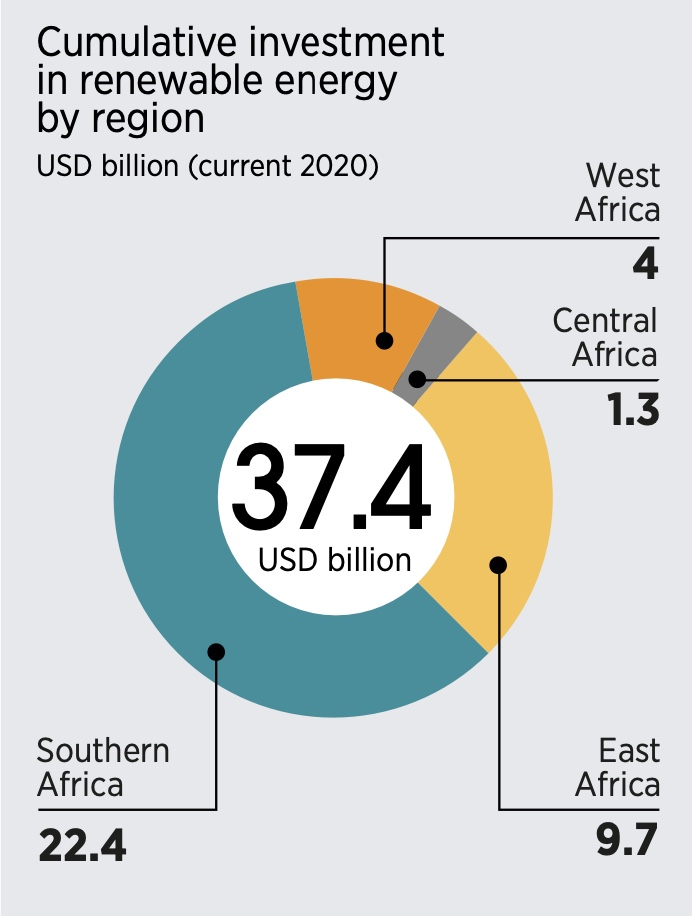

Portfolio
PP434 - Automated Visualisation for Policymaking
PP434 - Automated Visualisation for Policymaking
Task: Set up Github account and live page using GitHub pages. Add two charts using vegaEmbed function.
Task: Set up an account on the Economics Observatory Data Hub & Build two separate charts using the "create" tool.
Internal displacement in Ethiopia and DR Congo has surged to record levels due to ongoing armed conflicts, affecting nearly 10 million people combined.
Source: Economics Observatory
Task: Produce two charts that support or refute a topic of policy debate.
Policy context:
A central argument for the Brexit was that immigration negatively impacted economic growth and
employment in the UK.
Policymakers claimed that restricting immigration, particularly from the EU, would protect British jobs
and strengthen the economy.
I found it interesting to examine whether post-Brexit migration policies achieved their stated goals of
reducing net migration while
maintaining economic stability.
From the charts, we can state that net migration fell briefly after Brexit but later
surged to record levels, while GDP growth
and
unemployment remained largely stable. This contradicts claims that reducing immigration would strengthen
economic performance or protect jobs.
Source: UK Office for National Statistics
Task: Find a chart that a policy organisation, journalist, think tank, television channel or company has used. Replicate it and then improve on it.
Original chart
For the improved version, I visually extracted data from the original donut chart and created a CSV file. Using Vega-Lite, I calculated percentages and sorted bars from largest to smallest. I chose horizontal bars because it enables precise magnitude comparison, descending order because it shows regional hierarchy clearly, and tooltips help display both absolute values and percentages without cluttering the visualization.
NB: The original chart uses leader lines to label each region, but this feature is difficult to implement automatically in Vega-Lite. As an alternative, I added a legend and interactive tooltips showing the region and investment value on hover.
Source: IRENASTAT
API Task: Add a chart to your site that uses a live link to an API. Below your chart, add a functional description of the API.
Scraper Task: Using a Google Colab python notebook, scrape a website.
For the scraper task, I scraped the Skyscraper Center website to collect data on the world's tallest buildings. Here's the Google Colab notebook with my Python scraping code. I cleaned the data to keep only the columns needed for visualization, then converted it to TIDY format before creating the chart.
Source: World Bank | Skyscraper Center
Task: Use a loop to batch download six different series as JSON files. Save these to your GitHub account and use these (as "raw" files) to supply the data to six (or more) charts on a theme of your choice.
I used a Python loop to batch download GDP per capita data for six African countries (Egypt, Ethiopia, Kenya, Morocco, Nigeria, and South Africa) from the World Bank API. Here's the Google Colab notebook with my Python loop code for downloading and processing the data.
Source: World Bank
Task: Produce two maps and embed them in your portfolio page.
Source: DataMap Wales | Scottish Government
Task: Produce two charts using either of the two UK prices datasets provided in class. Both charts can be from the same database, or you can produce one from each.
Task: Produce two charts that include interactivity.
Source: World Bank | IEA Energy Statistics
Task 1: Advanced Analytics Chart - Produce a chart that uses more advanced analytics than standard line, bar or scatter charts.
Task 2: Machine Learning - Conduct an applied data analysis using any of the machine learning techniques taught in the Week 10 lecture and seminar.
For this task, I hypothesized that countries experiencing frequent electrical outages would show
higher firm generator ownership, indicating a shadow energy economy compensating for grid failures."
Our linear regression model achieved R² = 0.43, meaning grid unreliability explains 43%
of generator ownership variance across 46 African countries, a moderate but significant relationship.
This confirms our hypothesis that grid failures contribute substantially to generator investment, though
other factors like governance quality and business characteristics also play important roles in Africa's
shadow energy economy.
Source: World Bank | World Bank Enterprise Survey | IRENASTAT | Global Solar Atlas
I used ChatGPT and Claude AI as coding assistants for data cleaning in Python and chart creation in VegaLite.